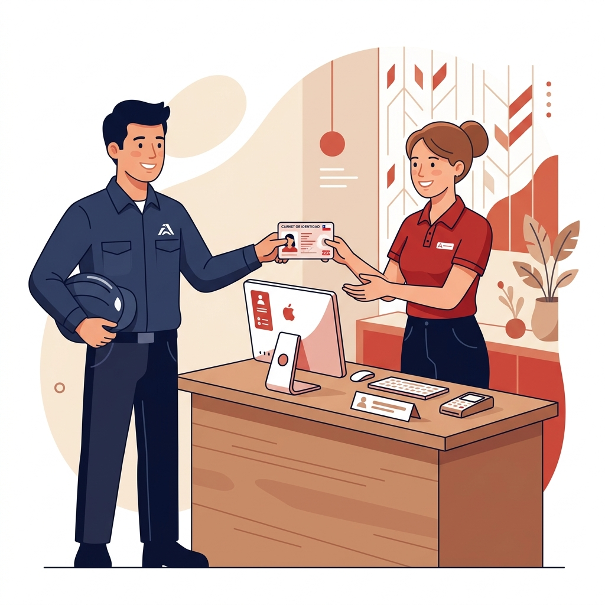
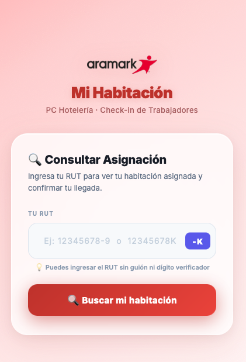
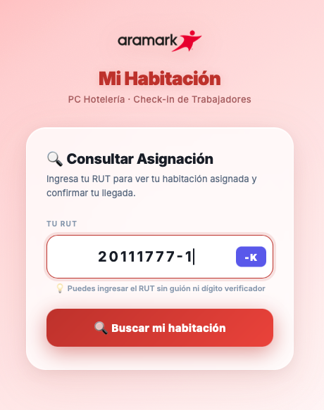
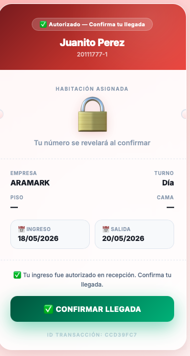
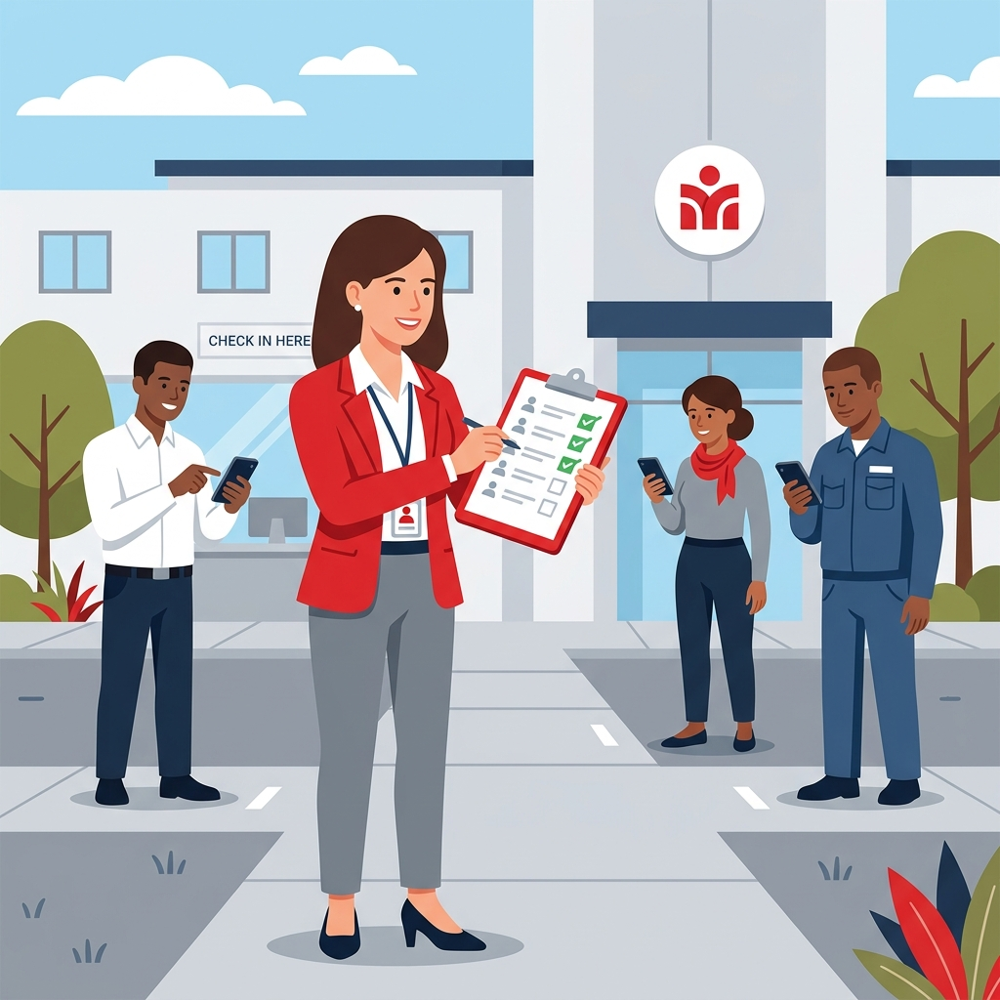

¿Cómo funciona el proceso de Check-In?
El sistema de check-in tiene 2 etapas: primero el trabajador pasa por Recepción con su carnet (autorización manual), y luego él mismo confirma su llegada desde su teléfono a través del portal digital "Mi Habitación".
Al llegar al campamento, el trabajador debe dirigirse directamente a la mesa de Recepción y entregar su Carnet de Identidad vigente al personal de hotelería. Este paso es obligatorio y no puede omitirse.
- Presentar el Carnet de Identidad (cédula chilena vigente)
- El personal verifica la identidad en el sistema
- Se confirma que el trabajador está en la lista de la empresa
- El personal anota o registra la hora de ingreso físico

El personal de Recepción activa en el sistema la autorización de check-in para ese trabajador específico. Esto habilita al trabajador para que pueda confirmar su llegada desde su teléfono en el siguiente paso.
- Recepción abre el sistema PC Hotelería en su computador
- Busca al trabajador por RUT o nombre
- Presiona "Autorizar Check-In" en el perfil del trabajador
- El sistema cambia el estado a "Autorizado ✅"
Una vez autorizado por Recepción, el trabajador debe abrir el portal digital "Mi Habitación" desde su teléfono celular. Este portal está disponible escaneando el código QR en Recepción o ingresando la dirección directamente.
- Escanear el código QR disponible en Recepción
- O escribir la dirección en el navegador del teléfono
- No es necesario descargar ninguna aplicación
- Funciona en cualquier teléfono con internet (Android o iPhone)

En el portal, el trabajador debe ingresar su RUT en el campo de búsqueda y presionar "Buscar mi habitación". El sistema lo identificará automáticamente y mostrará los datos de su asignación.
- Escribir el RUT (con o sin guión, con o sin dígito verificador)
- Si el RUT termina en K, usar el botón –K que aparece en el campo
- Presionar el botón rojo "🔍 Buscar mi habitación"
- El sistema mostrará el nombre y los datos de la asignación

Después de que el sistema muestre los datos correctos, el trabajador debe presionar el botón verde "✅ CONFIRMAR LLEGADA". Este es el paso final que registra oficialmente su check-in en el sistema.
- Verificar que el nombre y empresa sean correctos
- Presionar el botón verde "✅ CONFIRMAR LLEGADA"
- El sistema revelará el número de habitación asignada
- Guardar o anotar el número de habitación y número de cama

El supervisor o encargado de cada empresa debe revisar en el Portal de Asistencia que todos los trabajadores de su empresa figuren como "✅ CONFIRMADO". Cualquier trabajador pendiente debe ser contactado para completar su check-in.
- Acceder al portal administrativo como supervisor
- Ir a la sección "Control de Asistencia"
- Buscar el nombre de su empresa en el listado
- Verificar que todos los trabajadores estén en estado "✅ CONFIRMADO"
- Para los "⏳ PENDIENTES", contactarlos para que completen el proceso
- Usar el botón "Confirmar todos" solo como último recurso

📋 Resumen del Proceso Completo
Los 6 pasos en menos de 5 minutos por trabajador
Presentar Carnet
Autorización
Abrir Portal
Ingresar RUT
Confirmar Llegada
Verificar Equipo